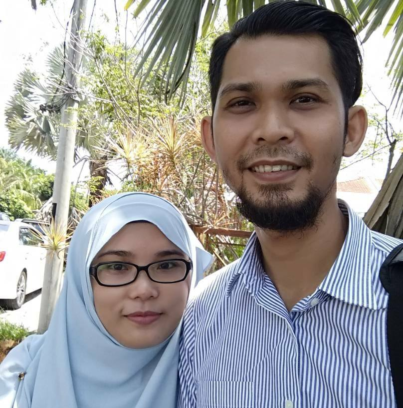

Muhammad Fadhil Ariffin
"I am a business owner, computer technician and also a freelancer.
i enjoys working in a technical field although,
my educational background are a lot differ than my actual interest.
Introvert is my strong suits,
and i would rather working alone; it helps me focusing on my task more efficiently"

My Experience
- Freelancer (Part- time)
Translation of documents & social media content in Malay- English vice versa
Data Entry
- Business Owner (Perak, Malaysia)
- Computer Technician (Perak, Malaysia)
My Skills
- Microsoft Programs
- Office Management
- Phone Repair
- Dependable/Resourceful
My Education
- Bachelor of Business Administration (Hons) Major in Human Resource (2011-2013)
- Diploma in Office Management and Technology (2007-2011)